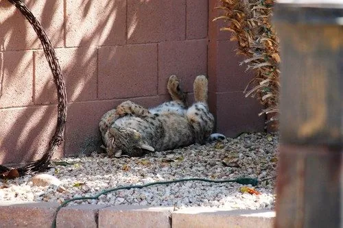

哺乳动物 · 动物界
美洲山猫 Lynx rufus

北美洲分布最广的野生猫类，短尾、耳尖簇毛与斑驳的黄褐色毛皮是显著特征，适应从森林到半荒漠的多种环境，种群总体稳定。
- 分类
- 门脊索动物门纲哺乳纲目食肉目科猫科属猞猁属
- 栖息环境
- 森林、灌丛、草原、沼泽与半荒漠，也出现在城市边缘
- 地理分布
- 北美洲，自加拿大南部经美国至墨西哥
- 保护级别
- IUCN 无危（LC）
物种志
美洲山猫体长 65–105 cm，尾长仅 10–18 cm，体重约 4–15 kg，雄性明显大于雌性。毛色由黄褐、红褐到灰褐不等，全身布满黑色斑点与条纹，耳尖有黑色簇毛，尾短而末端为黑色，后肢比前肢略长。
它们分布于加拿大南部至墨西哥的森林、灌丛、草原、沼泽和半荒漠，是适应力很强的伏击型捕食者，多在夜间和晨昏活动。食物以兔类为主，也捕食啮齿类、鸟类、爬行类和偶蹄类的幼仔。每胎 2–4 仔，妊娠期约 60–70 天，幼仔随母亲学习捕猎约一年。种群总体稳定，但在部分地区受道路和城市扩张影响。
形态与习性
- 食性兔类为主，也捕食啮齿类、鸟类与爬行类
- 体长65–105 cm，尾长仅 10–18 cm
- 体重约 4–15 kg，雄性较大
- 寿命野外约 7–12 年
- 繁殖妊娠期约 60–70 天，每胎 2–4 仔
- 活动节律夜行与晨昏活动为主，伏击捕猎
趣味知识
- 美洲山猫的尾巴很短，末端为黑色，奔跑时像一截断尾在晃动。
- 它的耳尖长有黑色簇毛，可帮助收集声音，提高定位猎物的能力。
- 美洲山猫是北美洲分布最广的野生猫类，能适应森林、草原甚至城市边缘。